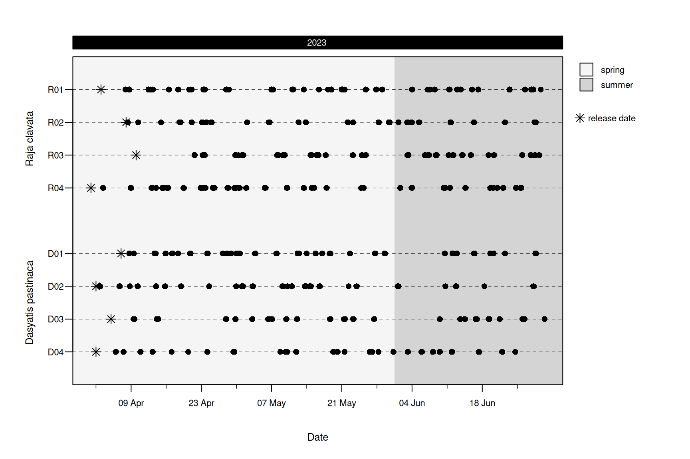
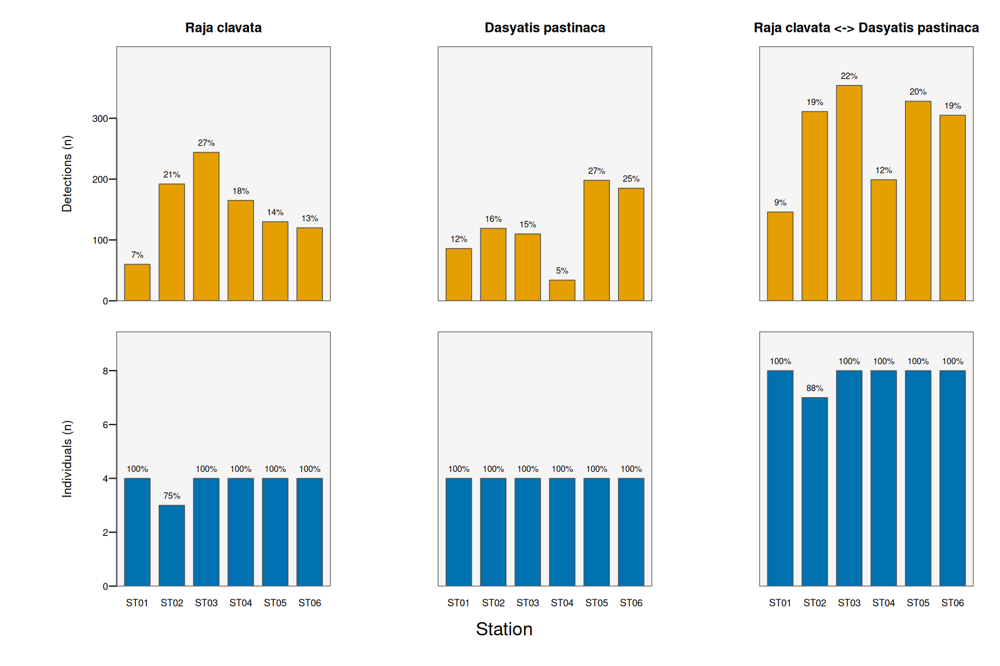
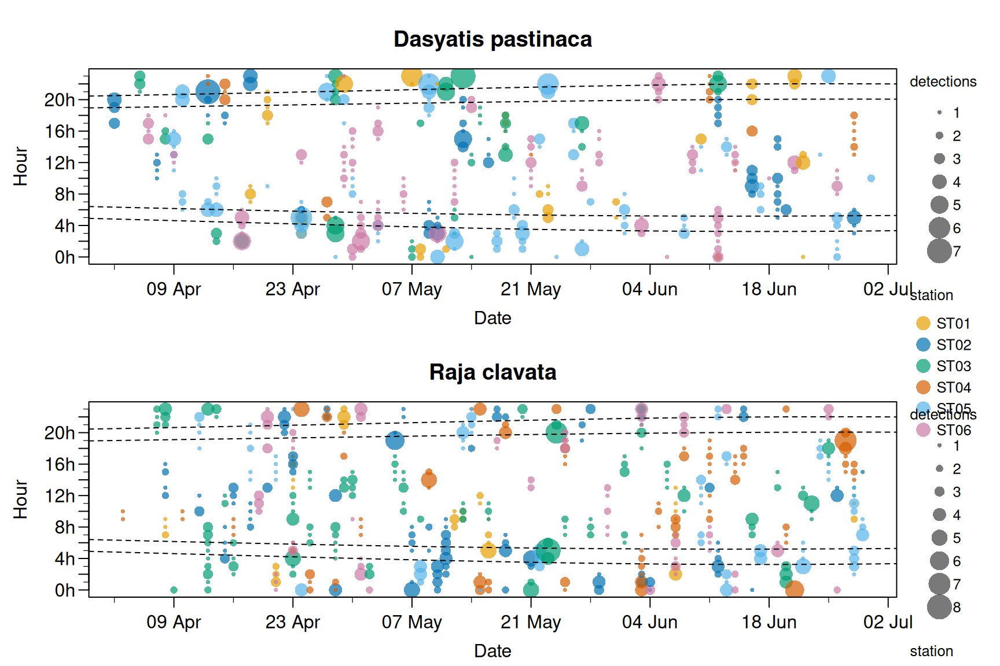
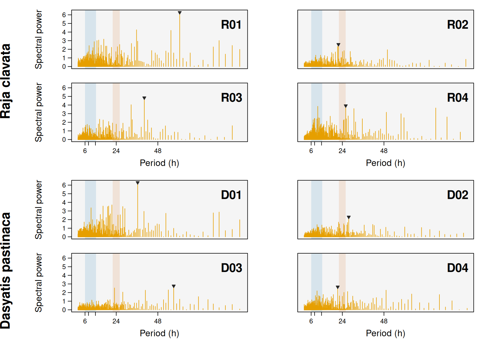
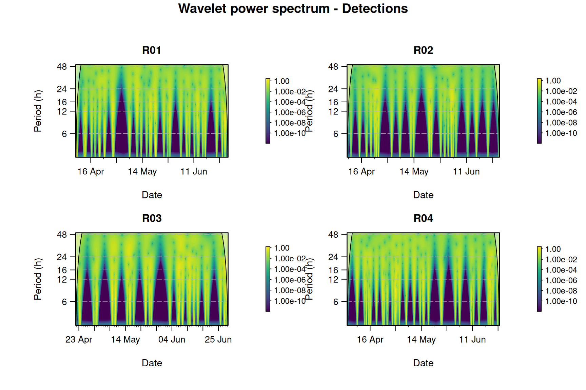

In this module
Starting from a clean
mobyDatacheckpoint, you will visualise detection patterns, classify diel phases, quantify residency, and produce a publication-style summary table — separately for each species using a singleid.groupsobject.Prerequisites: none. This module loads the bundled checkpoint
rays, so you can run it without having completed modules 01–02.
Learning objectives
By the end of this module you will be able to:
- Load the cleaned
mobyDatacheckpoint and inspect its metadata. - Use
id.groupsto generate every output per species automatically. - Draw abacus, station-summary and chronogram plots.
- Classify detections by diel phase with
getDielPhase(). - Reveal activity rhythms with
plotPeriodogram()andplotScalogram(). - Compute residency indices with
calculateResidency()and format them withsummaryTable().
Setup
The
id.groupsmotif
id_groupsis a named list of animal IDs, one element per species. Passing it to a moby function tells that function to compute and lay out its results independently for each group. You will pass the sameid_groupsobject to almost every function from here on — that is all it takes to get per-species outputs.
str(id_groups)
#> List of 2
#> $ Raja clavata : chr [1:4] "R01" "R02" "R03" "R04"
#> $ Dasyatis pastinaca: chr [1:4] "D01" "D02" "D03" "D04"1. A first look: the abacus plot
An abacus plot shows, for every individual, when it was detected over the study period — the quickest way to eyeshot data coverage, gaps and tag attrition.
plotAbacus(rays, id.groups = id_groups)
#> Warning: - 'id.col' converted to factor.
#>
#> Abacus plot
#> ------------------------------------------------------
#> Individuals: 8 (2 groups)
#> Detections: 1,643
#> Period: 2023-04-01 to 2023-06-30 (90 d)
#> Points: cex 1.00
#> Date axis: auto -> weekly ("%d %b")
#> Top band: "%Y"
#> Shading: seasonal
#> Legend: 1 col
#> ------------------------------------------------------
2. Where were animals detected? Station summaries
Each statistic is drawn in its own panel with its own axis, so counts of detections and of individuals are never conflated on a shared scale. Columns split the animals by species.
plotStationStats(rays, type = c("detections", "individuals"), id.groups = id_groups)
#> Warning: - 'id.col' converted to factor.
#> Warning: - Converting 'station.col' to factor.
#>
#> Station statistics
#> ------------------------------------------------------
#> Statistics: detections, individuals
#> Aggregate: station (6 levels)
#> Individuals: 8
#> Groups: 2 (all -> 3 series)
#> Bar height: counts (share for avg. detections)
#> ------------------------------------------------------
3. Diel patterns
Many coastal species shift activity between day and night. First we classify every detection by diel phase (here a simple day/night split based on the array’s location), then visualise the hour-by-date structure with a chronogram.
# chronograms operate on time-binned detections; bin to the hour first
rays$timebin <- getTimeBins(rays$datetime, interval = "60 mins")
# one panel per species (split.by), points coloured by receiver
plotChronogram(rays, sunriset.coords = mpa_coords, split.by = "species",
color.by = "station")
#> Warning: - 'id.col' converted to factor.
#> Warning: - 'color.by' variable converted to factor.
#>
#> Chronogram
#> ------------------------------------------------------
#> Individuals: 8
#> Detections: 1,643
#> Period: 2023-04-02 to 2023-06-30 (88 d)
#> Time bin: 60 min
#> Metric: detections
#> Split by: species (2 groups)
#> Style: points
#> Colour: station (categorical)
#> Diel: 4 lines
#> Date axis: auto
#> ------------------------------------------------------
4. Activity rhythms
The chronogram shows diel structure; plotPeriodogram() and plotScalogram() quantify the periodicities in a detection time series. Both work on a binned count series, so first collapse the detections into hourly counts per individual (rays$timebin was created above).
A periodogram gives one global spectrum per animal — how much power sits at each candidate period. The tidal (~6–12 h) and diel (~24 h) bands are shaded and the dominant peak is marked.
plotPeriodogram(binned, id.col = "ID", timebin.col = "timebin", id.groups = id_groups)
#> Warning: - 'id.col' converted to factor.
#>
#> Detection periodogram
#> ------------------------------------------------------
#> Individuals: 8 of 8 (min.days filter)
#> Sampling: dt = 60 min
#> Method: FFT periodogram; detrend: none
#> Period range: 2.0-96.0 h
#> Dominant peak: 0 tidal, 1 diel, 7 other
#> ------------------------------------------------------
A scalogram (continuous wavelet transform) shows when each rhythm is present — a time (x) by period (y) heat map. Shown here for the first species:
plotScalogram(binned[binned$ID %in% id_groups[[1]], ],
variable = "detections", id.col = "ID", timebin.col = "timebin", ncol = 2)
#> Warning: - 'id.col' converted to factor.
#>
#> Wavelet scalogram
#> ------------------------------------------------------
#> Individuals: 4 of 4 (min.days filter)
#> Sampling: dt = 60 min
#> Wavelet: MORLET; power: log
#> Pre-processing: gaps: zero; detrend: none
#> Period range: 3-48 h
#> ------------------------------------------------------
#>
|
| | 0%
|
|================== | 25%
|
|=================================== | 50%
|
|==================================================== | 75%
|
|======================================================================| 100%
Note
For these simulated rays the strongest periodicities are multi-day presence bouts, with a weaker near-diel (~24 h) component. Real activity data with a clear circadian rhythm shows a sharp 24 h peak and a persistent diel band running across the scalogram.
5. Residency
calculateResidency() returns a tidy, numeric table of residency indices (IR1, IR2, IWR) and the building blocks they derive from. We supply the date monitoring ended so the indices that need the full study interval can be computed.
monitoring_end <- as.POSIXct("2023-07-05", tz = "UTC")
residency <- calculateResidency(rays, last.monitoring.date = monitoring_end)
#> Warning: - 'id.col' converted to factor.
head(residency)
#> ID tagging_date first_detection last_detection monitoring_end
#> 1 D01 2023-04-07 2023-04-08 15:05:10 2023-06-28 18:33:40 2023-07-05
#> 2 D02 2023-04-02 2023-04-02 17:11:13 2023-06-28 06:55:50 2023-07-05
#> 3 D03 2023-04-05 2023-04-09 11:28:11 2023-06-30 10:10:52 2023-07-05
#> 4 D04 2023-04-02 2023-04-05 21:58:36 2023-06-24 13:59:54 2023-07-05
#> 5 R01 2023-04-03 2023-04-07 20:38:30 2023-06-29 15:38:57 2023-07-05
#> 6 R02 2023-04-08 2023-04-08 07:08:58 2023-06-28 16:57:07 2023-07-05
#> days_detected detection_span monitoring_duration IR1 IR2
#> 1 31 83 89 0.3734940 0.3483146
#> 2 25 88 94 0.2840909 0.2659574
#> 3 24 87 91 0.2758621 0.2637363
#> 4 30 84 94 0.3571429 0.3191489
#> 5 38 88 93 0.4318182 0.4086022
#> 6 23 82 88 0.2804878 0.2613636
#> IWR
#> 1 0.3248327
#> 2 0.2489814
#> 3 0.2521435
#> 4 0.2851969
#> 5 0.3866343
#> 6 0.24354346. A publication-ready summary
summaryTable() formats the residency values (and detection/coverage metrics) into a per-individual table, grouped by species when id.groups is supplied.
summaryTable(rays, last.monitoring.date = monitoring_end, id.groups = id_groups)
#> Warning: - 'id.col' converted to factor.
#> Warning: - No 'detections' column found, assuming one detection per row.
#> ID Tagging date Last detection N Detect N Receiv
#> 1 Raja clavata
#> 2 R01 03/04/2023 29/06/2023 283 6
#> 3 R02 08/04/2023 28/06/2023 160 5
#> 4 R03 10/04/2023 29/06/2023 207 6
#> 5 R04 01/04/2023 25/06/2023 261 6
#> 6 mean - - 228 ± 48 6 ± 0
#> 7 Dasyatis pastinaca
#> 8 D01 07/04/2023 28/06/2023 249 6
#> 9 D02 02/04/2023 28/06/2023 154 6
#> 10 D03 05/04/2023 30/06/2023 160 6
#> 11 D04 02/04/2023 24/06/2023 169 6
#> 12 mean - - 183 ± 38 6 ± 0
#> Monitoring duration (d) Detection span (d) N days detected IR1
#> 1
#> 2 93 88 38 0.43
#> 3 88 82 23 0.28
#> 4 86 81 30 0.37
#> 5 95 86 36 0.42
#> 6 90 ± 4 84 ± 3 32 ± 6 0.38 ± 0.06
#> 7
#> 8 89 83 31 0.37
#> 9 94 88 25 0.28
#> 10 91 87 24 0.28
#> 11 94 84 30 0.36
#> 12 92 ± 2 86 ± 2 28 ± 3 0.32 ± 0.04
#> IR2 IR2/IR1
#> 1
#> 2 0.41 0.95
#> 3 0.26 0.93
#> 4 0.35 0.94
#> 5 0.38 0.91
#> 6 0.35 ± 0.06 0.93 ± 0.02
#> 7
#> 8 0.35 0.93
#> 9 0.27 0.94
#> 10 0.26 0.96
#> 11 0.32 0.89
#> 12 0.30 ± 0.04 0.93 ± 0.02Recap & what’s next
You loaded a checkpoint, drove every output per species with one id.groups object, and moved from raw detections to residency indices and a formatted summary.
➡️ Next: 04 — Movement & space use, where we turn detections into positions, distances and home ranges.